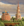
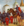
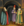
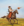
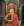
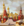

这是东斯拉夫各公国和  鲁塞尼亚的全部任务列表。[1]除
鲁塞尼亚的全部任务列表。[1]除  莫斯科、
莫斯科、 诺夫哥罗德、
诺夫哥罗德、 俄罗斯的东斯拉夫文化国家均使用这组任务。下列国家有权使用这组任务：
俄罗斯的东斯拉夫文化国家均使用这组任务。下列国家有权使用这组任务：
国家任务
tr_russian_minors_1
仅适用于：
- 至少满足之一：
- DLC
 第三罗马激活
第三罗马激活
- 不是：
| 任务
|
完成条件
|
效果
|
前置任务
|
独立公国 我们必须通过武力来确保我们独立。我们不承认任何宗主国，不接受任何对我们核心领土的占领。
|
- 不是附属国
- 首都：
 要塞等级至少为 3 要塞等级至少为 3- All provinces in the area of the currently considered province:
|
- 若该国的稳定度小于 +3
- 则获得
 1 稳定度 1 稳定度
- 否则获得
 50 行政点数 50 行政点数
- 获得
 20 正统性 20 正统性
- 所有省份位于诺夫哥罗德区域：
- 所有省份位于莫斯科区域：
|
|
征服诺夫哥罗德 除了莫斯科，诺夫哥罗德是罗斯最大的城市。作为贸易和商业的枢纽，它将是我们国家的一个必争之地。
|
|
- 获得国家修正 「诺夫哥罗德贸易」 持续20年，并给予以下效果：
 +15% 贸易效率 +15% 贸易效率
- 所有省份位于普斯科夫区域：
- 所有省份位于别洛奥泽罗区域：
- 所有省份位于波默尔区域：
- 所有省份位于南卡累利阿区域：
- 所有省份位于北卡累利阿区域：
- 所有省份位于阿尔汉格尔斯克区域：
- 所有省份位于沃洛格达区域：
|
 独立公国
 巩固国家
|
重建基辅 蒙古对基辅的劫掠标志着基辅罗斯的终结，那曾是我们人民的第一个黄金时代。我们必须重新夺回基辅，恢复昔日的辉煌，迎来新的黄金时代。
|
|
- 获得
 20 威望 20 威望
- 触发国家事件 「重建基辅」
- 所有省份位于白鲁塞尼亚区域：
- 所有省份位于普里皮亚季区域：
- 所有省份位于斯摩棱斯克区域：
- 所有省份位于明斯克区域：
- 所有省份位于红鲁塞尼亚区域：
|
 统一诸王公
|
统治鲁塞尼亚 随着基辅再一次在我们的控制之下，我们已经夺回了基辅罗斯的遗产。因此，我们恢复基辅统治的所有鲁塞尼亚地区是很自然的。
|
- 所有省份位于鲁塞尼亚地区：
- 所有省份位于红鲁塞尼亚区域：
|
- 获得 100 行政点数
- 获得
 100 外交点数 100 外交点数
- 获得
 100 军事点数 100 军事点数
- 所有省份位于鲁塞尼亚地区：
- 仅限于：
- 获得省份修正 「鲁塞尼亚一体化」 持续20年，并给予以下效果：
 −0.1 每月自治度变化 −0.1 每月自治度变化
|
 招募哥萨克人
 重建基辅
|
tr_russian_minors_2
仅适用于：
- 至少满足之一：
- DLC 第三罗马已激活
- 不是：
| 任务
|
完成条件
|
效果
|
前置任务
|
巩固国家 我们未来的生存，先不说扩张，将在很大程度上取决于国家的稳定。在向我们的国界外展望太远之前，我们必须培养一支专业士兵并建立我们的政府。
|
- 稳定度至少为 +2
- 如果：
- 仅限于：
- 至少满足之一：
- 制定了「俄罗斯公国」政府改革
- 制定了「卫彻共和国」政府改革
- 制定了「沙皇国」政府改革
- Has at least 5 streltsy regiments
- 否则：
- 拥有至少
 3 states 3 states
|
- 获得 10 威望
- 获得 50 行政点数
- 首都：
- All provinces in this region:
|
|

统一诸王公 所有罗斯的诸侯都将在我们的统治下联合起来。我们将成为一股不可忽视的力量。 |
|
- 获得 100 行政点数
- 获得 100 外交点数
- 获得 100 军事点数
- 获得国家修正 「统一的俄罗斯」 持续20年，并给予以下效果：
 −10% 核心化花费 −10% 核心化花费 −10% 侵略扩张影响 −10% 侵略扩张影响
|
 征服莫斯科
征服诺夫哥罗德
|
招募哥萨克人 扎波罗热的哥萨克人是凶悍的战士。如果我们可以控制草原的这个区域，他们就可以被说服加强我们的军队。
|
|
- 如果：
- 仅限于：
- 存在
 哥萨克阶层 哥萨克阶层
- 哥萨克阶层获得 20 忠诚度
- 否则：
- 获得
 15 陆军传统 15 陆军传统
- 所有省份位于斯洛博达乌克兰区域：
- 所有省份位于波多里亚区域：
- 所有省份位于东欧大草原地区：
|
统一诸王公
|
tr_russian_minors_3
仅适用于：
- 至少满足之一：
- DLC 第三罗马已激活
- 不是：
| 任务
|
完成条件
|
效果
|
前置任务
|
征服莫斯科 莫斯科统治罗斯的历史必须被终结。只要他们还在克里姆林宫图谋不轨，我们的公国便永无宁日。
|
|
- 获得国家修正 「击败莫斯科」 持续20年，并给予以下效果：
 +15% 人力恢复速度 +15% 人力恢复速度 +10% 陆军士气 +10% 陆军士气
- 所有省份位于奥卡区域：
- 所有省份位于梁赞区域：
- 所有省份位于弗拉基米尔区域：
- 所有省份位于苏兹达尔区域：
- 所有省份位于雅罗斯拉夫尔区域：
- 所有省份位于特维尔区域：
- 所有省份位于坦波夫区域：
|
巩固国家
|
挺进第聂伯河 几个世纪前，在蒙古枷锁之前，第聂伯河的肥沃土地是罗斯领土的一部分。他们将再次成为我们的一部分。
|
|
- 获得 20 陆军传统
- 所有省份位于第聂伯河西岸区域：
- 所有省份位于扎波罗热区域：
|
统一诸王公
征服莫斯科
|
粉碎鞑靼枷锁 我们仍然记得蒙古人的野蛮入侵。我们的城市被劫掠，我们的人民被屠杀，我们的自豪永远被践踏。是时候为那些残暴行径复仇了。
|
|
- 获得 100 军事点数
- 获得国家修正 「鞑靼枷锁消除」 持续20年，并给予以下效果：
 +3% 传教强度 +3% 传教强度 +100% 陆战带来的威望 +100% 陆战带来的威望
|
挺进第聂伯河
招募哥萨克人
|
区域任务
欧洲任务
| 任务
|
完成条件
|
效果
|
前置任务
|

主导全球贸易 财富的获取是一回事，但比所有其他人都富有，是真正掌握财富的标志。发展我们的本埠贸易节点，并拥有它的主导权。 |
|
- 获得 30 威望
- 获得国家修正 「世界闻名」 持续20年，并给予以下效果：
- +15% 贸易效率
|
|

守护信仰 决不能容忍异端邪说。[Root.Religion.GetName]教会需要一个虔诚的榜样来照亮道路。 |
- 不是：
- 正处于
 地理大发现时代 地理大发现时代
- 是信仰守护者
 宗教统一至少为 100% 宗教统一至少为 100%
|
- 获得国家修正 「正义的盔甲」 持续15年，并给予以下效果：
- +5% 陆军士气
 +1% 对异端传教强度 +1% 对异端传教强度
|
|
参考资料
- ↑ 脚本代码位于：/Europa Universalis IV/missions/TR_Russian_Minors_Missions.txt。